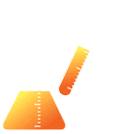
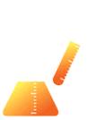

|
|
 

|
|
Graphical User Interfaces (GUI) for MOPAC2016
For versions of MOPAC2016 bundled with graphical user interfaces, please contact the providers below. The stand-alone command-line driven version of
MOPAC2016 may be downloaded from the
Downloads page on this web site.
ADF: Amsterdam Density Functional software
SCM: Scientific Computing and Modeling
Phone: +31 - 20 -
598 7626
Email:
info@scm.com or
sales@scm.com
URL:
http://www.scm.com/
Schrodinger
Schrodinger
Phone: +1 800 207-7482
Email:
sales@schrodinger.com
URL:
http://www.schrodinger.com
MedeA
Materials Design, Inc.
Phone: +1 760 495-4924
Email:
sales@materialsdesign.com
URL:
http://www.materialsdesign.com
Chem3D for Windows
Cambridgesoft
USA Toll Free: +1 800 315-7300
International: +1 617 588-9300
Fax: +1 617 588-9390
Email: info@cambridgesoft.com
URL: http://www.cambridgesoft.com/
WebMO & WebMO Pro
WebMO, LLC
Email: sales@webmo.net
URL: http://www.webmo.net/index.html
GUIs for MOPAC2016 (supported)
JSmol (free) is a very popular versatile JAVA-based program that allows structures to be examined in detail, including molecular orbitals.
If keyword HTML is used, MOPAC will write a
simple web-page that can be opened using JSmol. For examples, see
Molecules,
Solids, and
Animations.
http://jmol.sourceforge.net/
Other GUIs for
MOPAC2016 (either untested or unsupported)
Avogadro (free) is an excellent editor for preparing MOPAC input
data-sets and for viewing results. Runs on Windows, Mac, and Linux.
https://avogadro.cc/
Gabedit (free) is a
popular graphical user interface for computational
chemistry packages including MOPAC. It can display a variety of
calculation results such as molecular orbitals, animations, and surfaces. The
advanced "Molecule Builder" allows to rapidly sketch in molecules and examine
them in 3D. Graphics can be exported to various formats, including animations.
Runs on Windows, Mac, and Linux.
https://sourceforge.net/projects/gabedit/
Molden (free) is a good pre/post processing program of molecular and electronic structure that runs on Windows,
Mac, and Linux. Z-matrix editing of geometries.
http://www.cmbi.ru.nl/molden/molden.html
MoCalc2012 (free) Graphical User Interface for
MOPAC, GAMESS (US), Firefly and ORCA
http://sourceforge.net/projects/mocalc2012/
Pcmodel by Serena Software is a pre/post
processing program of molecular and electronic structure that runs on Windows,
Linux, and Macintosh.
http://www.serenasoft.com/
http://www.serenasoft.com/prices.html
MolWorks (free) is a molecular builder and pre/post interface to MOPAC and other programs. It runs on Windows, Linux, and Mac.
http://www.molworks.com/en/ (defunct)
Winmostar (free for students) is a Japanese and English language pre/post processing program of molecular and electronic structure that runs on Windows.
http://winmostar.com/
Facio (free) is a 3D-Graphics program for
molecular modeling
and
visualization of quantum chemical calculations. Facio is available only for Windows platform
.
https://zzzfelis.sakura.ne.jp
HyperChem is a complete molecular modeling suite that runs under Windows and Mac. Allows editing, e.g. adding hydrogens.
http://www.hypercubeusa.com/
AOMix
(free) is software for molecular orbital (MO) analysis. It generates total, partial, and overlap population density-of-states (DOS) plots.
http://www.sg-chem.net/aomix/ (defunct)